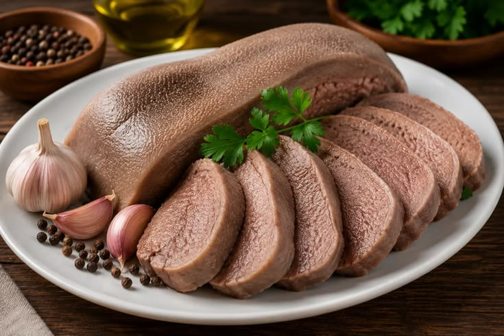

Mapa CarneCerta
Tradicional e muito saborosa em panela
A língua bovina é um corte clássico, com textura firme, sabor marcante e excelente resultado cozida ou em preparos especiais.

Ideal para • panela • molho • cozido
Maciez
3/5
Firme
Sabor
5/5
Profundo
Versatilidade
4/5
Alta
Abrir recomendador inteligente
Língua Bovina
Um corte que une tradição, sabor intenso e grande versatilidade em receitas de panela e cozimento lento.
A língua bovina é apreciada por sua textura firme e sabor profundo, sendo excelente para preparos com molho, ervas e cozimento bem controlado.
Panela
Molho
Cozida
4.6
Especial de panela
Excelente para quem busca um corte tradicional, saboroso e muito bem aproveitado em receitas de cozimento longo.
Ideal para
Dica do açougueiro IA
Cozinhe devagar e finalize com ervas e caldo para realçar seu sabor sem ressecar a peça.